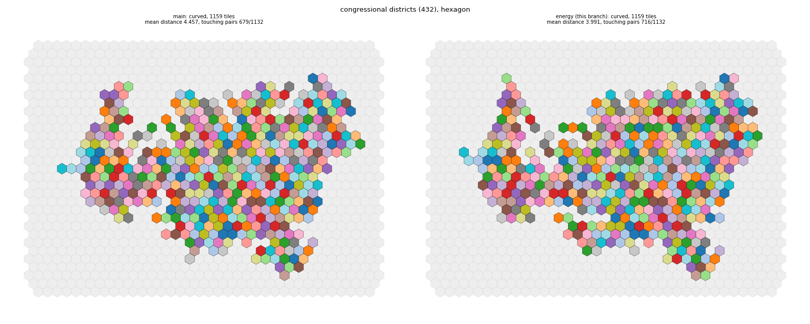
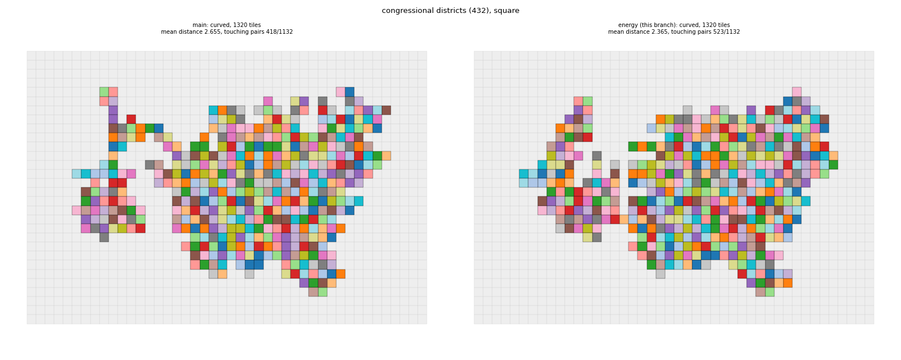
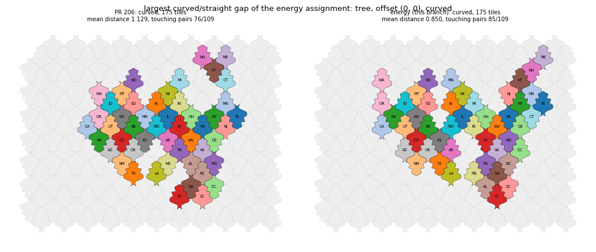
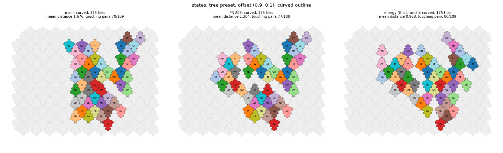
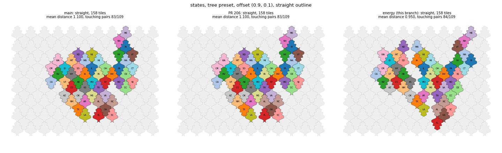
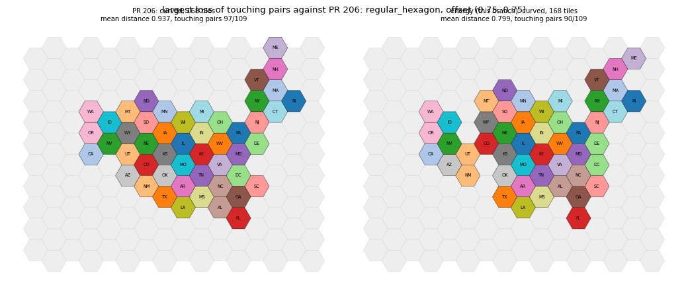

Draft. The grid layout replaces the oscillating refinement, the island fix and the hole fill by a descent on one energy (distance, contacts, connectivity) from a damped Hungarian start.
Draft, part of #198. Built on the branch of PR 206; the diff against main includes it.
assignment="energy" (default); the previous pipeline stays available as "refine". Code in symbol_cartogram/layouts/grid/_energy.py.origin_weight x sum of distances (linear) + neighbor_weight x contact penalty + connectivity_weight x K. The contact penalty is the hop penalty of neighbors plus 1 per pair of non-neighbors on touching tiles. K counts the extra pieces of a group of connected regions, groups merged into one piece, and enclosed holes beyond the geographic holes.origin_weight and neighbor_weight keep 0.5 each (one tile step costs one contact); connectivity_weight is 50 (one defect costs 100 contacts).| main | PR 206 | energy | |
|---|---|---|---|
| Mean distance (180 runs) | 0.898 | 0.893 | 0.793 |
| Touching pairs (of 109) | 68.43 | 68.36 | 71.77 |
| Disconnected tile sets / runs with holes | 0 / 0 after the repairs | 0 / 2 after the repairs | 0 / 0, no repairs |
| Cases more than 25 % apart, curved against straight | 1 | 0 | 0 |
| Largest gap | 52 % | 9.5 % | 14.2 % (tree at (0, 0)) |
| tree (0.9, 0.1), 175 / 158 tiles | 1.676 / 1.100 | 1.204 / 1.100 | 0.968 / 0.950 |
| States time, mean (serial) | 0.30 s | not timed | 0.45 s (1.48x; worst run 2.1x) |
| Districts, hexagon: distance / touching / time | 4.457 / 679 / 4.0 s | 4.457 / 679 | 3.991 / 716 / 5.2 s |
| Districts, square: distance / touching / holes / time | 2.655 / 418 / 2 / 4.3 s | 2.651 / 468 / 1 | 2.365 / 523 / 0 / 5.1 s |
Against PR 206, run by run: the mean distance is worse in 14 of 180 runs (at most +0.039); the touching pairs are fewer in 32 of 180 (at most -7; for example the hexagon presets at offset (0.75, 0.75) get 90 instead of 97 pairs at a mean distance of 0.80 instead of 0.94); both are worse in 2 runs. Two runs take more than twice the time of main. Results are identical between runs.
Dividing by the maximum squared distance ties the price of distance to the extent of the lattice, margin tiles included; for the states one tile step costs about 0.002. In tile units the exponent barely changes the trade-off between distance and contacts; the energy uses linear distance so that every tile step has a constant price equal to one contact. For the mosaic layout this suggests that the maximum, not the square, is the problem; changing to linear over the maximum also changes the effective weight, which may explain the clash with interior_bonus in the earlier evaluation. The mosaic layout was not changed or tested.
Figures (main, PR 206, energy):
!tree curved !tree straight !largest gap, tree at (0, 0) !worst touching regression !districts hexagon !districts square
topology_weight and compactness only shape the starting assignment now.source_indices) inputs, and whether the balance of distance and contacts suits users.
districts_hexagon.png

districts_square.png

largest_gap_tree00.png

tree_curved_before_after.png

tree_straight_before_after.png

worst_touch_regression.png